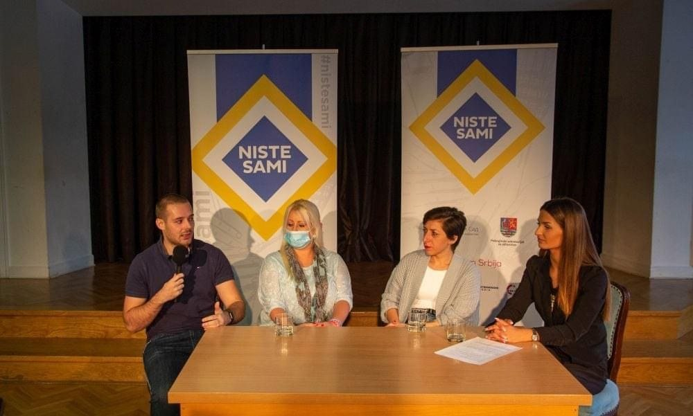

Burnout prevention before crisis
Recognizing workload pressure, emotional exhaustion, stress patterns and early warning signs before burnout escalates.
Organizations & workshops
Workshops & Speaking, talks, and collaboration formats for clinics, organizations, coworking communities, universities, startups, and organizational wellbeing initiatives.
Workshop topics
Sessions can be adapted for HR teams, managers, leadership groups, international professionals, distributed teams and organizational organizational wellbeing initiatives.
Recognizing workload pressure, emotional exhaustion, stress patterns and early warning signs before burnout escalates.
Understanding how stress affects attention, reactions, communication, judgment and decision-making.
Practical conversations about workload pressure, psychological safety, remote work and healthier workplace cultures.
Support for leaders, managers and team leads carrying responsibility for people, decisions, uncertainty, multicultural dynamics and team wellbeing.
How pressure, remote work and cultural differences shape communication, conflict, trust and emotional safety in multicultural teams.
Building sustainable work patterns that support performance while respecting recovery and wellbeing.
A workshop designed specifically for HR professionals exploring emotional labour, burnout risk, difficult conversations, compassion fatigue, boundaries, psychological resilience, and sustainable ways of supporting others without neglecting their own wellbeing.
Why this works
The sessions are not generic wellbeing talks. They connect psychological insight with the real pressure people experience in leadership, remote work, organizational change, multicultural environments and globally distributed teams.

Collaboration formats
I can adapt sessions for teams, clinics, coworking communities, founders, HR audiences, professionals, and organizational wellbeing initiatives.